오픈컬리지 - 인공지능 스터디 준비 가이드
아무것도 설치 안된 윈도우 환경을 기반으로 가이드 만들어요~. 맥 쓰시는 분도 비슷할거에요.
스크린샷을 많이 넣어 길어서 보기 불편하실것 같기도 하지만, 이렇게 하는게 제 마음이 놓이네요. ㅠㅠ
1. 파이썬 설치
아래 스크린샷처럼 파이썬 다운로드 페이지(https://www.python.org/downloads/)에 가서 Download 2.7.13버튼을 눌러서 파이썬 설치파일을 받으세요.
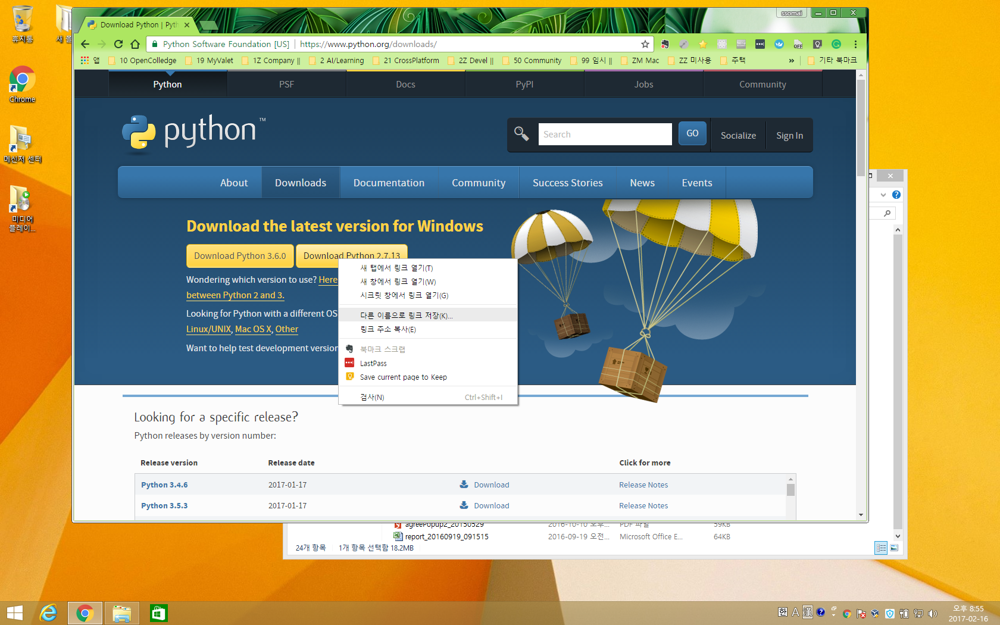
받은 python-2.7.13.msi 파일을 실행하면 아래 스크린샷처럼 진행됩니다.
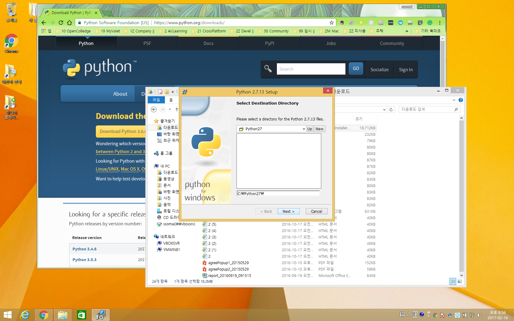
주의!
아래 화면에 Add python.exe to Path를 Will be installed on local hard drive로 지정하셔야 되요.
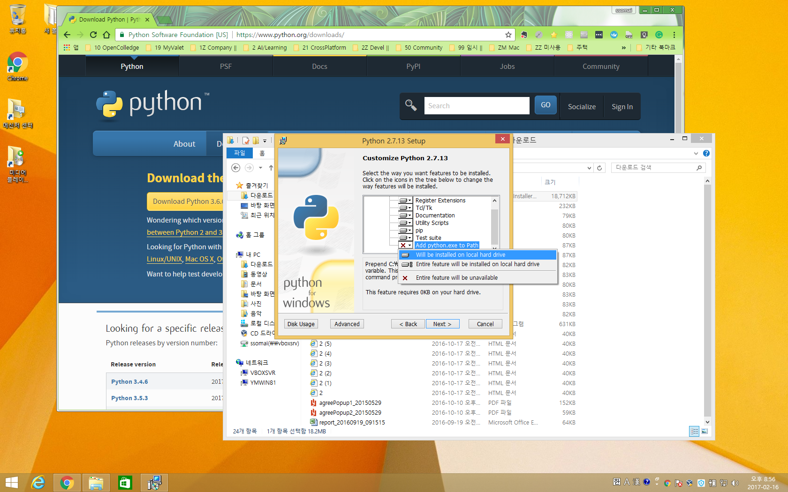
이제 파이썬이 잘 깔렸는지 확인하는 작업입니다.
윈도우 -> 실행 -> cmd를 실행합니다.
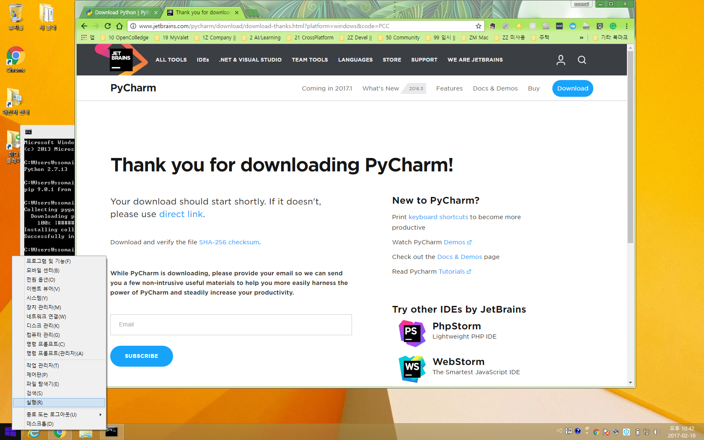
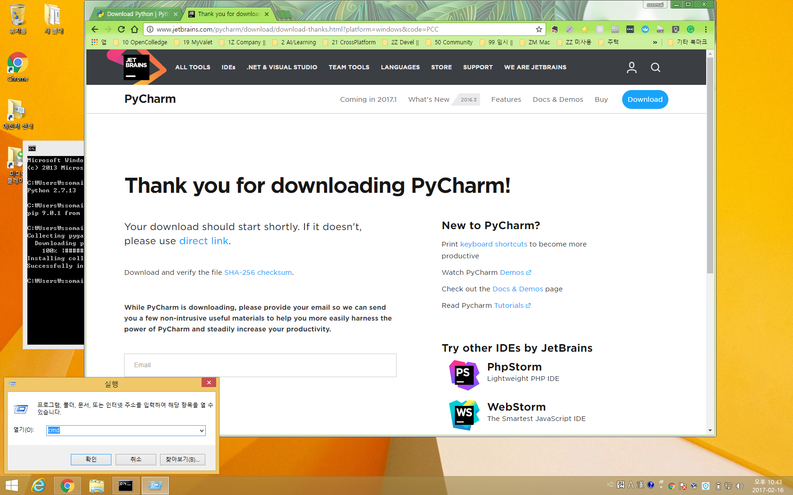
cmd로 열린 커맨드 창에서
python --version
pip --version
이 명령어들이 다음과 같이 실행될거에요~.
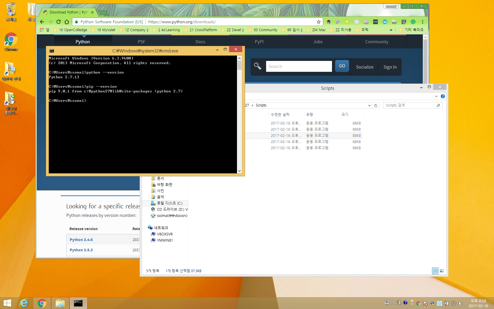
다음 명령어로 이번 프로젝트에서 필요한 모듈인 pygame을 설치합니다.
pip install pygame
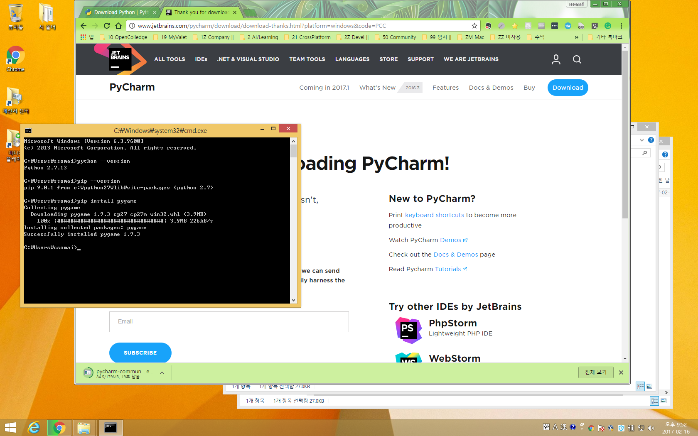
2. PyCharm
이번엔 파이썬 개발툴로 주로 추천되는 PyCharm 무료버전입니다~. (이미 익숙한 개발툴이 있으시다면, 그걸 사용하셔도 무방할거 같아요~.)
PyCharm 무료버전 다운로드 페이지(http://www.jetbrains.com/pycharm/download/download-thanks.html?platform=windows&code=PCC)로 가셔서
PyCharm 무료버전 설치파일을 받고 아래 스크린샷들처럼 설치를 진행하세요~.
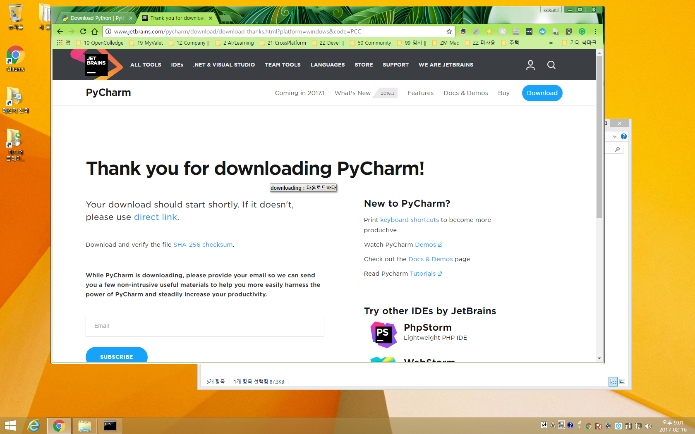
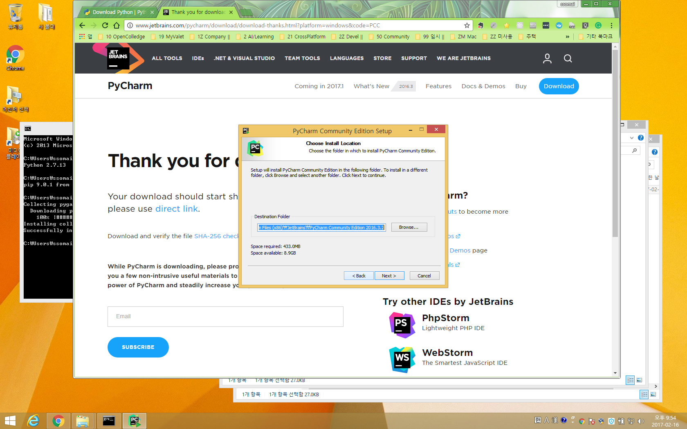
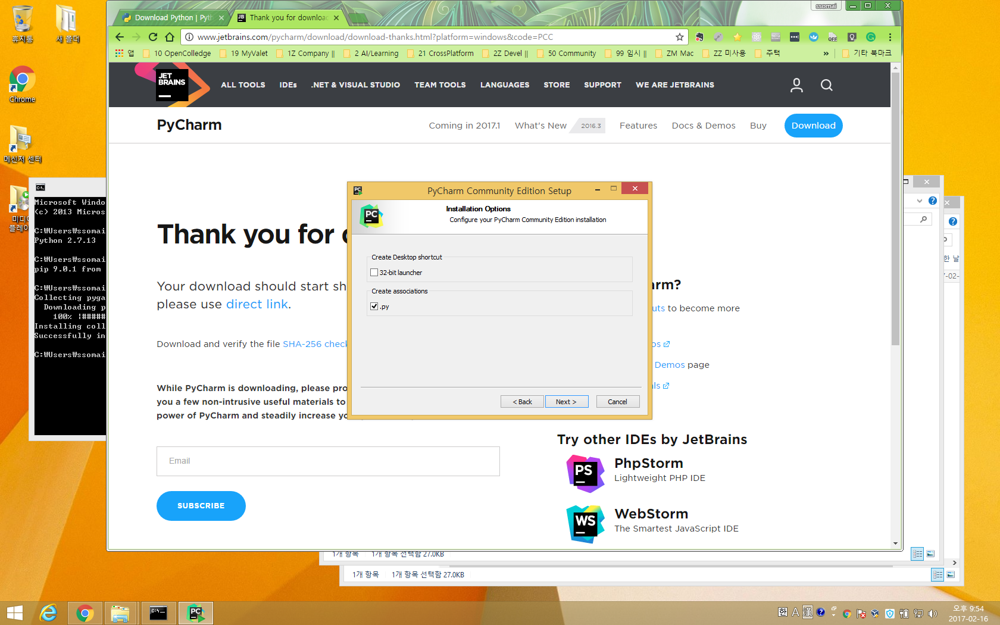
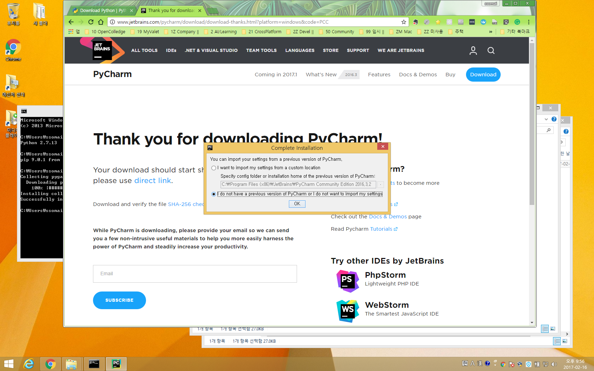
아래 화면까지 오셨으면 설치는 완료된것입니다~.
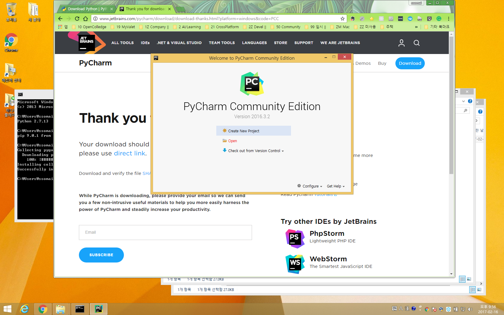
이제 호스트 문민철님께서 카톡 단톡방에 공유해주신 압축파일을 푸시면 game_1.py파일이 나올거에요.
저처럼 c:\workspace\ai 폴더에 넣으셔도 되고 어디든 넣으셔도 되요~.
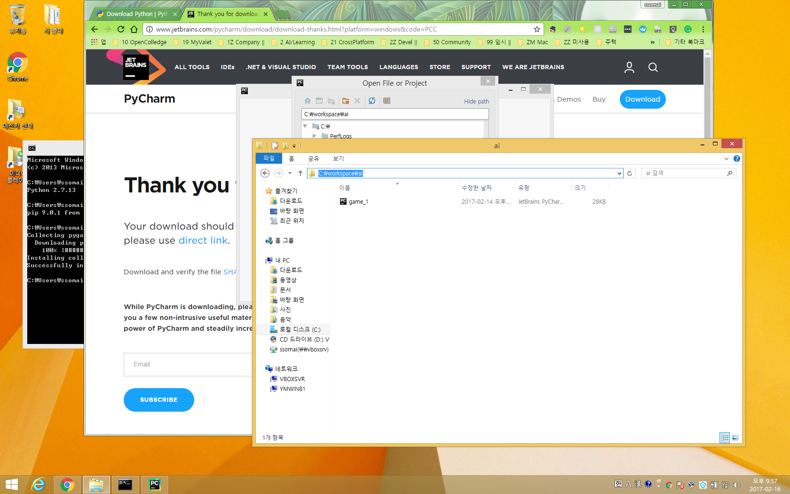
다시 아까 떴던 PyCharm창에서 open 버튼을 누르시면 아래 화면처럼 디렉토리를 고르는 화면이 나올거에요.
그 화면에서 아까 game_1.py파일이 있는 폴더를 지정하시면 됩니다.
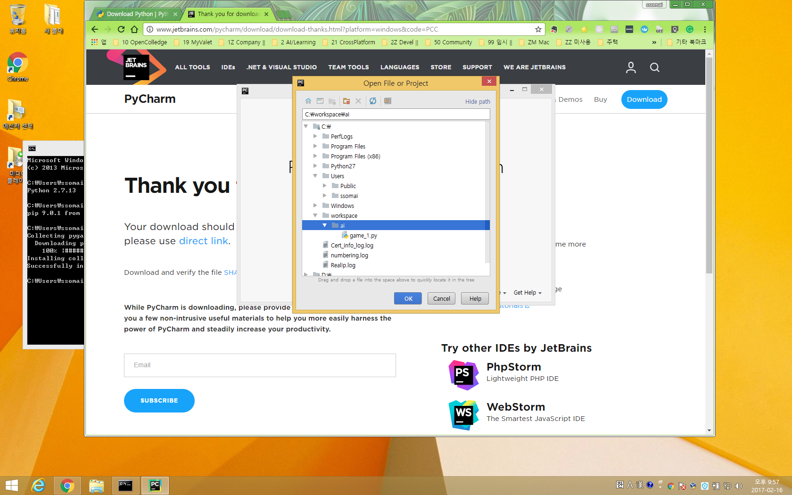
이제 대망의 실행입니다!.
PyCharm에서 game_1.py파일을 열고, 마우스 우클릭하시면 Run game_1이 보일거에요.
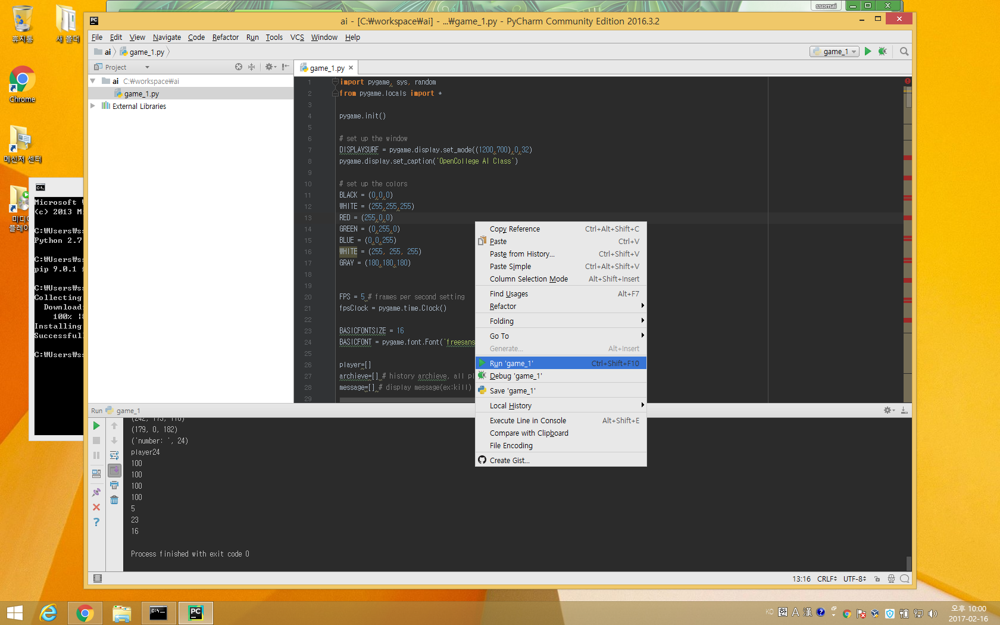
끗!!! 수고많으셨어요~.